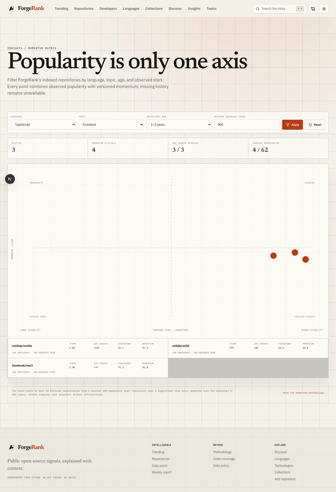

01 / MOMENTUM
Is attention compounding—or merely large?
The Momentum Matrix separates observed reach from versioned movement. Comparable snapshot windows power every point; incomplete history is withheld.
- Fixed 0–100 momentum and logarithmic observed popularity
- Shareable cohort filters and visible denominators
- No popularity fallback when history is insufficient
